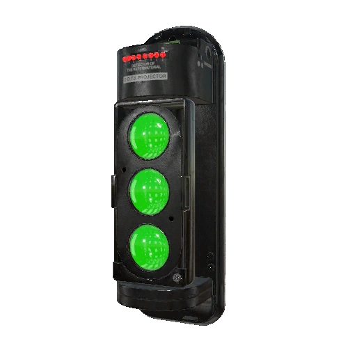
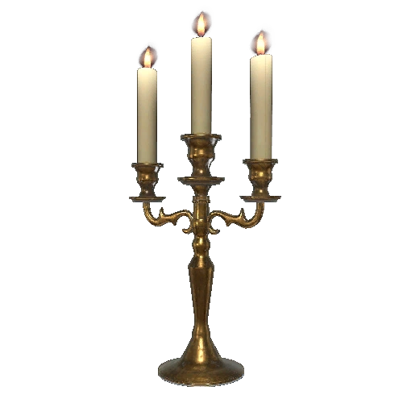
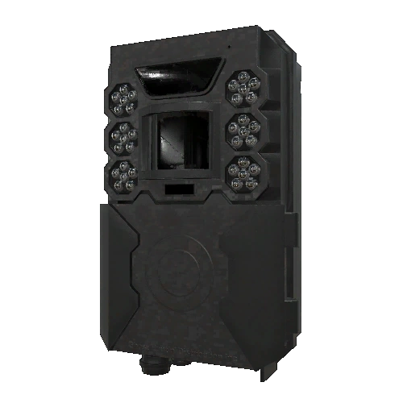
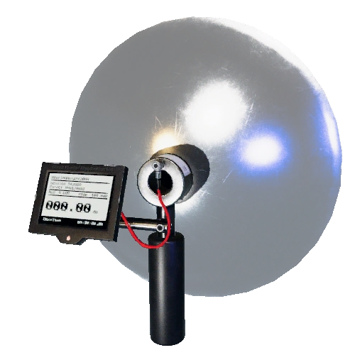
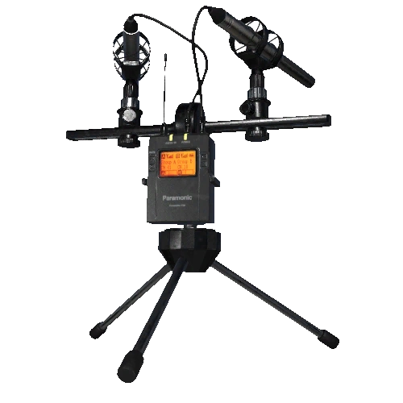
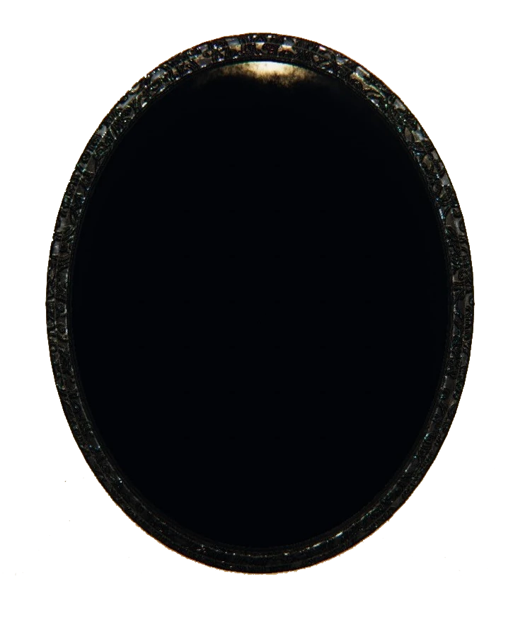
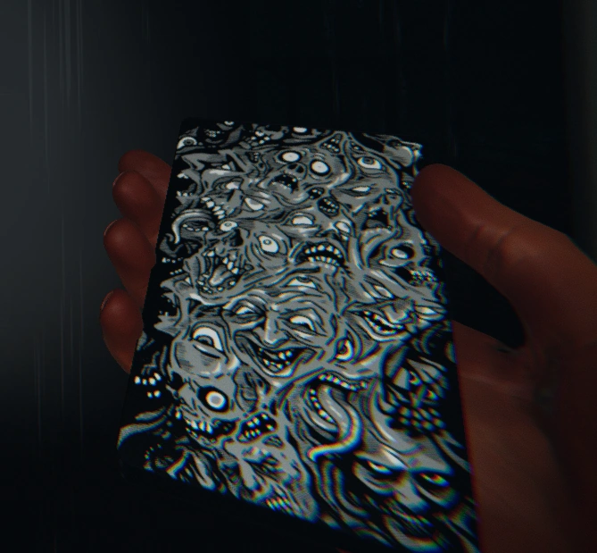
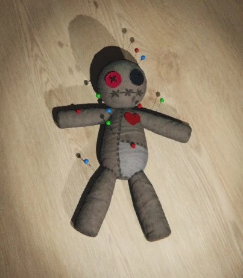

Ezen az oldalon mindent megtalálsz, amit a Phasmophobia-ban használható felszerelésekről és elátkozott tárgyakról tudni érdemes. A különböző eszközök segítenek a nyomozásban, a szellemek beazonosításában és abban, hogy túlélj egy vadászatot. Megtudhatod, hogyan használd őket a lehető leghatékonyabban, és mikor melyik eszközre van szükséged.
Az elátkozott tárgyak különösen érdekesek, mert bár erős segítséget nyújtanak, nagy kockázatot is rejtenek magukban. Ha jól használod őket, komoly előnyt szerezhetsz, de ha nem figyelsz, könnyen bajba kerülhetsz. Nézd át a részleteket, hogy mindig felkészült legyél a következő vadászatra!
Felszerelés

D.O.T.S. Projektor
A DOTS Projector egy lézersugaras készülék, amit falra vagy földre rögzíthetsz. Ha a szellem áthalad rajta, láthatóvá válik a mozgása.
Bizonyíték ezeknél a szellemeknél:
- Oni
- Yurei
- Goryo
- Banshee
- Phantom
- Thaye
Az EMF Reader érzékeli a szellem által keltett elektromágneses mezőket. Ha 5-ös szintet ér el, akkor ez bizonyíték egy adott szellemnél. Fontos, hogy mindig legyen nálad, mert szinte bárhol használható.
Bizonyíték ezeknél a szellemeknél:
- Jinn
- Oni
- Goryo
- Shade
- Twins
- Raiju
Ez a könyv megadja a szellemeknek a lehetőséget, hogy üzenetet hagyjanak neked. Ha írást találsz benne, az szellembizonyíték. Helyezd el a gyanús területeken, és várd a reakciót.
Bizonyíték ezeknél a szellemeknél:
- Spirit
- Demon
- Revenant
- Mare
- Moroi
- Thaye
A Spirit Box lehetővé teszi, hogy kommunikálj a szellemmel. Tedd fel a kérdéseidet, és ha válaszol (például "Igen" vagy "Nem"), az egyértelmű bizonyíték. Sötétben és egyedül a legjobb használni.
Bizonyíték ezeknél a szellemeknél:
- Spirit
- Wraith
- Poltergeist
- Mare
- Yokai
- Twins
- Onryo
- Deogen
A hőmérő méri a hőmérsékletet a szobákban. Ha a hőmérséklet hirtelen fagypont alá esik, az bizonyíték arra, hogy egy szellem van a közelben. Ajánlott az 1-es szintű hőmérőnél maradni, mivel az adja a legpontosabb értéket, ez sokszor akár 5 perc előnyt is jelent!
Bizonyíték ezeknél a szellemeknél:
- Wraith
- Phantom
- Banshee
- Mare
- Demon
- Hantu
- Yurei
- Onryo
- Twins
- Moroi
A UV Light segítségével ujjlenyomatokat vagy lábnyomokat találhatsz, amiket a szellem hagy maga után ajtókon, ablakokon vagy kapcsolókon.
Bizonyíték ezeknél a szellemeknél:
- Banshee
- Poltergeist
- Hantu
- Goryo
- Obake
- Mimic
Ez a kamera segít, hogy Ghost Orb-okat találj. Állítsd fel egy jól belátható helyre, és figyeld, hogy van-e bármilyen gömbszerű jelenség a felvételeken.
Bizonyíték ezeknél a szellemeknél:
- Mare
- Yokai
- Yurei
- Revenant
- Onryo
- Thaye
A sima lámpa az alapvető világítóeszköz a játékban. Bármi történjék is, mindig legyen nálad, mert ha a szellemek kiiktatják az áramot, vagy sötét helyekre mész, ez az egyetlen fényforrásod. Az erősebb lámpa (Strong Flashlight) fejlesztésével jobb fényt kapsz, így könnyebben láthatsz a sötétben.
Ez a kis kereszt megakadályozza, hogy a szellem vadászni kezdjen. Tedd le ott, ahol aktív a szellem, és biztonságban lehetsz, ha a szellem a közelében próbál meg támadni.
Segítség ezeknél a szellemeknél:
- Banshee (hatékonyabb)
- Démon (Fél tőle)

Gyertya/Lámpás
A gyertyával megelőzheted a Sanity csökkenését, hiszen ha gyertyafényben vagy, kevésbé csökken a mentális állapotod. Tökéletes olyan helyekre, ahol nincs áram. Az Onryo szellem megtalálásában segíthet, illetve több küldetés részét is képezi, hogy fújja el a szellem.
Ez egy kamerát (vagy lámpát/Éjjelikamerát) szerel a fejedre, ami élő közvetítést nyújt a csapattársaidnak a furgonból. Nagyon hasznos, ha valaki figyelni akarja, mit látsz, miközben te a házban vagy, és nyomokat keresel. Ez különösen jól jön a Ghost Orb-ok figyelésénél.
Az öngyújtó egy egyszerű, de hasznos eszköz, amivel meggyújthatod a Smudge Stick-eket, gyertyákat, vagy bármilyen más éghető dolgot. Bár önmagában nem nagy szám, ha van nálad, nagyban segít a túlélésben.
A Tömjén, vagy Smudge Sticks segítségével egy ideig távol tarthatod a szellemet, különösen a vadászat alatt. Egy gyújtóval vagy öngyújtóval meggyújthatod.
Segítség ezeknél a szellemeknél:
- Spirit (meghosszabbítja a békés időszakot)
- Yurei (meggátolja a szellem visszatérését)

Mozgásérzékelő
A mozgásérzékelő a falra rögzítve érzékeli, ha a szellem áthalad előtte. Ideális zárt terekben vagy hosszú folyosókon elhelyezni.

Parabolikus Mikrofon
Ez a mikrofon érzékeli a távoli hangokat, és megmutatja, hogy a szellem közeledik. Akkor hasznos, ha még nem vagy biztos a szellem helyében.
Ezzel a kamerával készíthetsz fotókat bizonyítékokról (például ujjlenyomatokról, szellemaktivitásról), vagy épp pénzjutalmat érő képeket a szellemről, elátkozott tárgyakról, esetleg a csontokról. A fotóalbumba készült képek alapján még plusz pénzt is szerezhetsz a küldetések végén.
A sót a padlóra szórva nyomokat hagyhatsz a szellemeknek, akik átsétálhatnak rajta. Ez különösen akkor hasznos, ha szeretnéd tudni, hol mozog a szellem, mivel lábnyomokat hagynak a sóban.
Bizonyíték ezeknél a szellemeknél:
- Wraith (nem hagy nyomot a sóban, ez is bizonyíték)
Sanity Gyógyszer
A Sanity Pills egy olyan gyógyszer, ami visszaállítja a Sanity szintedet, vagyis a mentális állapotodat. Ha túl sokáig maradsz sötétben vagy sok szellemaktivitást tapasztalsz, a mentális állapotod rohamosan csökken, és ez vadászathoz vezethet. Ezzel a gyógyszerrel újra felkészülhetsz a további keresgélésre.

Hangérzékelő
A hangérzékelő a falra helyezve figyeli a zajokat egy adott területen. Ez akkor hasznos, ha még nem tudod pontosan, hol lehet a szellem, de hallani szeretnéd a mozgását. Ideális nagyobb pályákon.
A Tripod (állvány) arra jó, hogy stabilan rögzítsd rá a Video Camera-t. Ez lehetővé teszi, hogy szabadon helyezd el a kamerát, akár magára hagyva is, hogy később visszanézhesd a felvételeket a furgonból. Különösen hasznos Ghost Orb-ok keresésénél.
Elátkozott Tárgyak
A csontok a játékban véletlenszerű helyeken jelennek meg, és ha fotót készítesz róluk, plusz pénzt kapsz. Ha begyűjtöd őket, akkor még több pénzt szerezhetsz, de mindig készülj fel arra, hogy a csont megtalálása után nagyobb lesz a szellem aktivitása.

Elátkozott Tükör
A Tükör, vagy Haunted Mirror megmutatja, hogy melyik szobában van a szellem. Használatakor a tükörbe nézve látni fogod a szoba részleteit, ahol a szellem tartózkodik. Viszont figyelj a Sanity-dre, mert nagyon gyorsan csökkenti azt, illetve ha túl sokáig bámészkodsz akkor eltörik és vadászat indul.
A Majommancs egy különleges elátkozott tárgy, amivel kívánságokat teljesíthetsz, de figyelj, mert ezek gyakran visszaütnek. Minden kívánságnak ára van, és néha a szellem aktivitása hirtelen megnőhet, ha nem vagy óvatos a kívánságaiddal. Szóval csak akkor használd, ha tényleg felkészült vagy a következményekre!
A zenedoboz, vagy Music Box egy dallamot játszik, ami előhozza a szellemet. Használhatod arra, hogy megtaláld, hol van a szellem, de óvatosan, mert könnyen vadászatra indulhat!

Ouija Tábla
Az Ouja tábla, vagy Ouija Board segítségével közvetlenül beszélhetsz a szellemmel, de figyelj oda, mert komoly következményei lehetnek. Ha rosszul használod, azonnal vadászni kezdhet a szellem. Jó arra, hogy megkérdezd, hol tartózkodik a szellem, vagy mi a célja.
Az Idézőkör, vagy Summoning Circle segítségével egy rituáléval megidézheted a szellemet, ami azonnal megjelenik. Ez hasznos lehet, ha gyorsan bizonyítékot akarsz szerezni, de egy vadászatot is elindíthat.

Tarot Kártya
A Tarot kártya, vagy Tarot Cards egy pakli, amit húzva különböző hatásokat idézhetsz elő. Lehet, hogy növeli az Sanity-t, vagy megidézi a szellemet, de nagyon kiszámíthatatlan, így érdemes óvatosan bánni vele!

Voodoo Baba
A Voodoo baba, vagy Voodoo Doll segítségével kapcsolatba léphetsz a szellemmel azáltal, hogy beleszúrod a tűket. Ez növeli az aktivitását, de az is előfordulhat, hogy azonnal vadászni kezd.